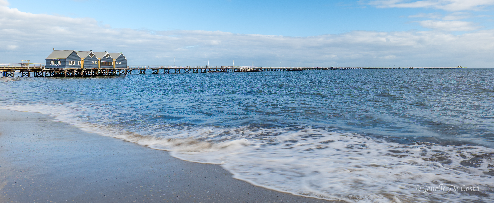

The area the French explored and the English colonized...

Geographe Bay
South of Mandurah the coastal residential stip continues. The cities of Bunbury, Bussleton and Dunsborough sprawl along
the edge of Geographe Bay for over 80km occassionaly interupted by farming and forests....
16-09-2025
Cape Natureliste
On the bottom left-hand corner of Australia there is a squarish sticky out bit. The top left corner is formed by Cape
Naturalist and the bottom left corner is formed by Cape Leeuwin. In between is the Margaret River region. This regions has
to be in our top three in all of Australia. Have look at the images and you will see why....